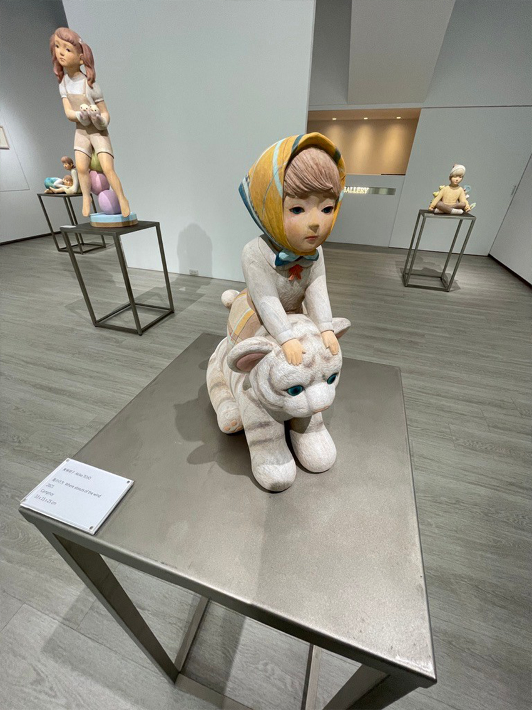

在養成了每週觀看一個展覽的習慣之後，發現了越來越多超級美的木雕作品，幾間藝廊相繼展出不同風格的木雕，突破了原先對於宗教木雕的既定印象(以往接觸較多的可能是神像之類的木雕作片)，其中有兩間藝廊的作品整個超級驚艷！！
|  |
其中一個是之前分享過的秋刀魚藝術中心的「城市之海－劉欣宜個展」，另一間是在涅普頓畫廊所展出的「東條明子 物語の物語true stories」，東條明子東京藝術大學雕刻研究室碩士畢業，擅長的木雕風格是以小孩、女生為主題，可以感受到深深的情感傳達，加上讓動物與其作品互動，創造出生動的情境畫面，那次的展覽整個感動到我，每一個木雕作品都超級細緻且帶著故事性。
附帶一個小故事，當時看展的時候，有位情侶一進到展區，就跟服務人員說他要買門口的木雕兔子，當時人員回應說所有的作品都已經售出，哇！可見東條明子的精緻木雕讓許多人想帶回家收藏觀賞！ (以往個人藝廊看展經驗來說，比較常見的是大概1/3以下的作品售出)
當時我們就開始想，有沒有可能，也可以來試著學一下木雕？於是開始在網路上搜尋DIY課程，剛好看到Pinkoi有超可愛的木雕體驗課，就立刻報名了！
小木森林連結
Pinkoi的“小木森林 木雕工作室”，可以在網頁上直接報名，有三個主題可以選擇:動物樂園(16種小動物們可以選擇: 貓熊、黑熊、大象、小豬、刺蝟、穿山甲、河馬、犀牛、鱷魚、柯基、貓咪、狐狸、松鼠、兔子、水豚、馬來貘，整個選擇障礙XD)、鯨豚系列(7種鯨豚)、小樹系列(5種可以愛小樹木)，在上課之前，老師會先詢問想雕刻的品項，我們這次選擇的是動物樂園的小豬、狐狸。
到了課程當天，抵達小木森林的工作室，空間上蠻寬敞舒適的，一進門就會聞到濃濃的木香，老師會在大木桌前教學，一開始簡單介紹工具、工具使用方法等等，就開始雕刻了！
因為事先已經決定好雕刻的品項，老師事先會完成木頭的粗坯(這點有點可惜，本來想從一塊木頭開始玩的，不過老師說這樣可能要分成兩天體驗，時間會太長)，粗坯大概可以看出動物的輪廓，雕刻的參考線也已經標示完成。
每個木雕尺寸大約10*4cm，剛好的小巧可愛，還以為已經有粗坯，應該很快可以完成吧? 沒想到這一刻就是快6個小時(完全沒休息的那種，覺得職業雕刻師真是太厲害了)
每個雕刻技法所用的雕刻刀都不同，主要用這三種，大圓刀、小圓刀、平刀，交錯使用在不同的動物部位線條上，附帶一提，一定要記得戴手套，不然手會非常痛，因為要很用力的壓制住木頭，另一手以刻刀去雕刻掉不要的木頭，老師為了讓我們方便看示範所以沒有戴手套，整個手紅紅的(心疼QQ)，另一方面手套可以防止手滑刀子劃到自己。
在雕刻的時候，老師閒聊問大家為什麼會想來上課，我們提到因為最近看了一些木雕展，都非常美而且浪漫，聊到藝術家劉欣宜木雕讓我們聯想到童話小王子，沒想到老師跟劉欣宜是朋友，開始大聊特聊藝術木雕這條路，一般藝術家會跟藝廊長期合作，開始個展中曝光，然後！上次看到這幅作品大概花了3個月才完成，售價90多萬，老師說要看雕刻的速度，通常欣宜的作品都是完成就很快有人買下了！
等到刻的差不多，大概過了5個多小時，以為要開始上色，沒想到！這課程是要回家自己上色XD，還沒上色的狐狸被同事說長的很像小豬，老師說買壓克力顏料回家上色就可以了，因為木頭會吸水，大概要上2~3層顏色才會飽和。
以上就是今天要分享的木雕體驗，在藝術賞析之後，我們開始試著開始行動對於藝術的探索，下一個想嘗試的目標就是: 油畫！！ 前陣子去看了索卡藝術的展覽「寫景成詩」，潑墨的風景畫超級美的，在朦朧山裡樹林中，潑甩的墨增加了夢幻與更多的想像空間，霧濛的山裡有什麼呢?
於此同時，實體畫作與數位結合的複合型創作也超想嘗試的，秋刀魚藝術中心「黃敏俊 光色合一 系譜與辨識 新光色論 創作的再發現」展覽，裡面投影與實體畫的疊合，創造出立體及動態感，也是一項想嘗試的項目！
 |
就讓我們持續嘗試自己的藝術細胞吧！